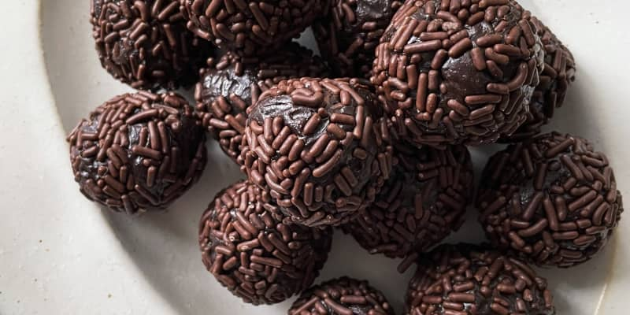
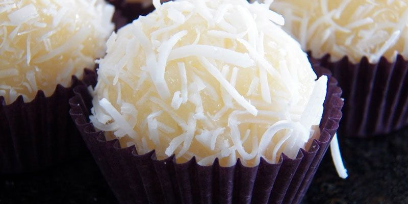

Lasanha- Prato típico da ítalia feito com massa queijo e adicionais a preferencia.Strogonoff- Prato típico da Rússia feito com creme de leite mostarda e sal.


Brigadeiro- Doce típico do Brasil feito com apenas leite condensado e nescau.Doce de coco- Doce típico da África feito com coco ralado leite condensado e açúcar.